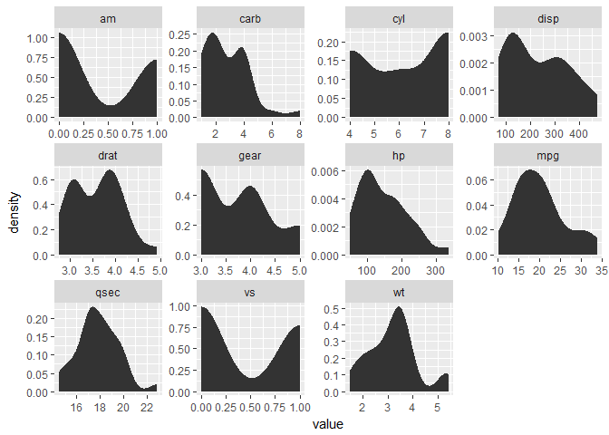
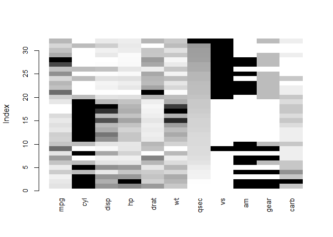
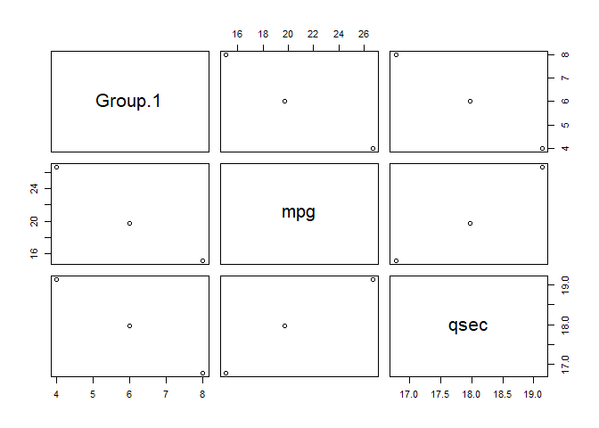

First R output
knitr::opts_chunk$set(echo = TRUE)
library(ggplot2)
library(dplyr)
##
## Attaching package: 'dplyr'
## The following objects are masked from 'package:stats':
##
## filter, lag
## The following objects are masked from 'package:base':
##
## intersect, setdiff, setequal, union
library(reshape2)
library(tidyverse)
## Loading tidyverse: tibble
## Loading tidyverse: tidyr
## Loading tidyverse: readr
## Loading tidyverse: purrr
## Conflicts with tidy packages ----------------------------------------------
## filter(): dplyr, stats
## lag(): dplyr, stats
#data() #GET LIST OF BUILT IN DATA SETS
#THIS FILE IS FOR TESTING OUT NEW TRICKS AND TIPS
#List of tricks
#1. melting/gathering a DF into 2 columns then facetting and looking at distribution. scales='free'
#2. Missing value visuals with VIM package and matrixplot()
#require("VIM")
#matrixplot(Cars93, sortby = "Weight", cex.axis=0.6)
#3. Missing value visuals with m <- robCompositions::missPatterns(Cars93)
#4. AGGREGATE() FUNCTION. ALSO CAN USE methods(aggregate)
typeof(mtcars) #it's a list
## [1] "list"
df_cars <- as.data.frame(mtcars) #convert to DF
head(df_cars, 6) #view first 6 lines
## mpg cyl disp hp drat wt qsec vs am gear carb
## Mazda RX4 21.0 6 160 110 3.90 2.620 16.46 0 1 4 4
## Mazda RX4 Wag 21.0 6 160 110 3.90 2.875 17.02 0 1 4 4
## Datsun 710 22.8 4 108 93 3.85 2.320 18.61 1 1 4 1
## Hornet 4 Drive 21.4 6 258 110 3.08 3.215 19.44 1 0 3 1
## Hornet Sportabout 18.7 8 360 175 3.15 3.440 17.02 0 0 3 2
## Valiant 18.1 6 225 105 2.76 3.460 20.22 1 0 3 1
#USE MELT() FUNCTION TO TURN INTO 2 COLUMNS. ONE IS THE VARIABLE AND THE OTHER IS VALUE. LONG DF NOW.
require(reshape2)
melt.cars <- melt(df_cars)
## No id variables; using all as measure variables
head(melt.cars, 15)
## variable value
## 1 mpg 21.0
## 2 mpg 21.0
## 3 mpg 22.8
## 4 mpg 21.4
## 5 mpg 18.7
## 6 mpg 18.1
## 7 mpg 14.3
## 8 mpg 24.4
## 9 mpg 22.8
## 10 mpg 19.2
## 11 mpg 17.8
## 12 mpg 16.4
## 13 mpg 17.3
## 14 mpg 15.2
## 15 mpg 10.4
#NOW YOUCAN VIEW DISTRIBUTIONS OF EACH VALUE. Use geom_histogram or geom_density. or stat_density
ggplot(data = melt.cars, aes(x = value)) +
stat_density()+
facet_wrap(~variable, scales = "free")

#COMPARE WITH DPLYR() GATHER() AND SPREAD(). BUT DEFAULT NAMES ARE col1 "key" and col2 "value"
gath.cars <- gather(df_cars)
head(gath.cars)
## key value
## 1 mpg 21.0
## 2 mpg 21.0
## 3 mpg 22.8
## 4 mpg 21.4
## 5 mpg 18.7
## 6 mpg 18.1
#PLOT USING KEY AS FACETTING VARIABLE
ggplot(data = gath.cars, aes(x = value)) +
stat_density()+
facet_wrap(~key, scales = "free")

#CREATE MISSING VALUES PLOT
require("VIM")
## Loading required package: VIM
## Warning: package 'VIM' was built under R version 3.4.3
## Loading required package: colorspace
## Loading required package: grid
## Loading required package: data.table
##
## Attaching package: 'data.table'
## The following object is masked from 'package:purrr':
##
## transpose
## The following objects are masked from 'package:reshape2':
##
## dcast, melt
## The following objects are masked from 'package:dplyr':
##
## between, first, last
## VIM is ready to use.
## Since version 4.0.0 the GUI is in its own package VIMGUI.
##
## Please use the package to use the new (and old) GUI.
## Suggestions and bug-reports can be submitted at: https://github.com/alexkowa/VIM/issues
##
## Attaching package: 'VIM'
## The following object is masked from 'package:datasets':
##
## sleep
car_df <- as.data.frame(mtcars)
matrixplot(car_df, sortby = "qsec", cex.axis=0.9)

#m <- robCompositions::missPatterns(car_df) # Analysis of the missing or the zero patterns structure of a data set.
#lapply(m, length)
#m
#AGGREGATE FUNCTION
mpg_by_cyl <- aggregate(car_df[, c("mpg", 'qsec')], by =
list(car_df$cyl), mean)
plot(mpg_by_cyl)
